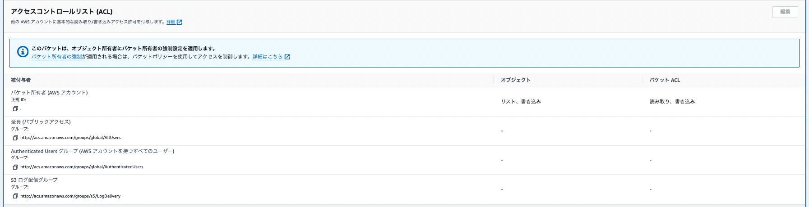

7.5. S3のアクセスコントロール¶
S3はインターネットからも直接アクセス可能であり、セキュリティ事故が非常に起きやすいため、アクセスコントロールについては慎重に扱う必要がある。
AWSでは、S3に対して３つのアクセスコントロールの機能を提供している。
ブロックパブリックアクセス
バケットポリシー
ACL（Access Control List）
上記の設定に関しての優先度は以下
ブロックパブリックアクセス ＞ バケットポリシー ＞ オブジェクトACL ＞ バケットACL
7.5.1. 推奨¶
AWSは公式サイトで2023年４月から、ブロックパブリックの有効とACLの無効化をデフォルト設定として採用しており、推奨している。
パブリックアクセスをブロックすることで、意図しないオブジェクトの公開を防ぐことができ、ACLを無効とすることでよりシンプルなアクセス制御が可能となるため、このような設定が推奨されている。
7.5.2. ブロックパブリックアクセス¶
アカウントやバケット単位で、意図しないパブリックアクセスを抑止するための機能。 ブロックパブリックアクセス設定をしておくことで、意図しないパブリック設定がされそうになったり、されていたとしても全て無視してパブリックアクセスを許可しない。
明示的に不特定多数のアクセス元を認め利用されることを想定していない限りは、ブロックパブリックアクセスは有効化することが推奨されている。
7.5.2.1. パブリックアクセスとは¶
パブリックアクセスとは、AWSの認証を受けていない接続元からのアクセスのこと。 S3所有者が明示的に許可を記述していない接続元からのアクセスをパブリックアクセスと呼ぶ。
7.5.2.2. ブロックパブリックアクセスの種類¶
オプション名 |
効果 |
|---|---|
BlockPublicAcls |
パブリックアクセスを許可するACLの設定の更新を禁止する。 |
IgnorePulicAcls |
パブリックアクセスを許可するACLやオブジェクトが存在してもパブリックアクセスをさせない。 |
BlockPublicPolicy |
パブリックアクセスを許可するバケットポリシーの設定・更新を禁止する。 |
RestrictPublicBuckeds |
パブリックアクセスを許可するバケットポリシーが存在してもパブリックアクセスやクロスアカウントを無視する。 |
7.5.3. バケットポリシー¶
バケットポリシーはS3におけるリソースベースポリシーである。 S3においてバケットに対するアクセス制御をする場合はバケットポリシーの利用が基本となる。
以下のようなユースケースが想定される
クロスアカウントの設定
Conditionを利用した接続元の制限
ポリシーは以下の構成要素で成り立っている。詳細はAWS/IAM/Policy参照
"Version": "2012-10-17",
"Statement": [
{
"Effect": "①",
"Action": "②",
"Resource": "③",
"Principal": "④",
"Condition⑤": {
"{Operator⑥}": {
"Key⑦": "Value⑧"
}
}
}
]
}
7.5.4. ACL（Access Control List）¶
被付与者に対する、バケットとオブジェクトのアクセス許可を管理する設定。 ACLを利用することによって、アクセス元とアクセスの種類を定義し、バケットやオブジェクトに対するアクセス制御を定義する
対象（バケットorオブジェクト） ＊ 被付与者 ＊ アクセス設定
被付与者とアクセスの種類が複数あるため、順を追って説明する。
※ただし、オブジェクトごとの個別のアクセス制御という特定のユースケースを除き、ACLの利用は非推奨となっていてS3作成寺のデフォルトではACLは無効化されている。
7.5.4.1. 被付与者¶
被付与者は大きく4つの種類に分類される。AllUsersやAuthenticatedUsersはどちらもパブリックアクセス。
被付与者の種類 |
対象 |
|---|---|
AWSアカウント |
個別のAWSユーザーで正規ユーザーIDによって指定する。デフォルトではバケットの所有者のみが設定されている |
All Users グループ |
世の中全てのユーザー |
Authenticated Usersグループ |
任意のAWSのユーザー（広さでいうとAllUsersとそれほど変わらない） |
Log Delivery グループ |
S3のサーバアクセスログ記録のために配信するグループ。ACLが非推奨になってからは、ログ配信設定もポリシーを通じて設定されるように変更された |

7.5.4.2. アクセスの種類¶
全部で5種類のアクセス制御があり、バケットを対象にした時とオブジェクトを対象にした時で挙動が異なる。
アクションの種類 |
バケット設定寺 |
オブジェクト設定寺 |
|---|---|---|
READ |
バケット内のオブジェクトのリストが可能 |
対象オブジェクトとメタデータの取得が可能 |
WRITE |
バケット上にオブジェクトをアップロードできる |
ー |
READ_ACP |
バケットのACLを読み込める |
オブジェクトのACLを読み込める |
WTITE_ACP |
バケットのACLを更新できる |
オブジェクトのACLを更新できる |
FULL_CONTROL |
上記全てを被付与者に与える |
上記全てを被付与者に与える |